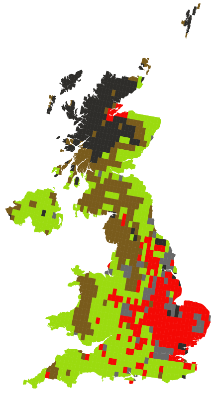

UK_T0_P0 = baseline
Temperature: +0°C, Precipitation: -10%
Temperature: +0°C, Precipitation: -20%
Temperature: +2°C, Precipitation: -0%
Temperature: +2°C, Precipitation: -10%
Temperature: +2°C, Precipitation: -20%
Temperature: +4°C, Precipitation: -0%
Temperature: +4°C, Precipitation: -10%
Temperature: +4°C, Precipitation: -20%
